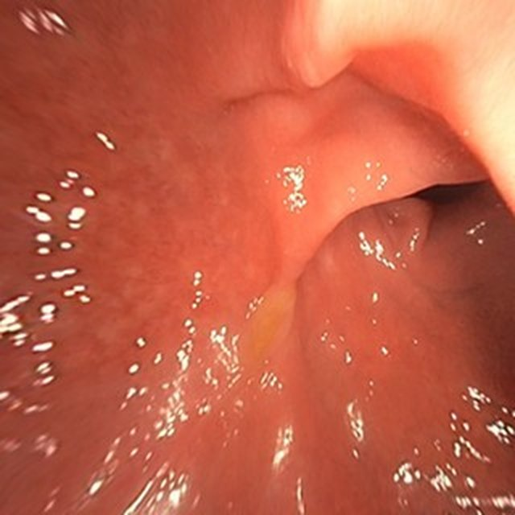
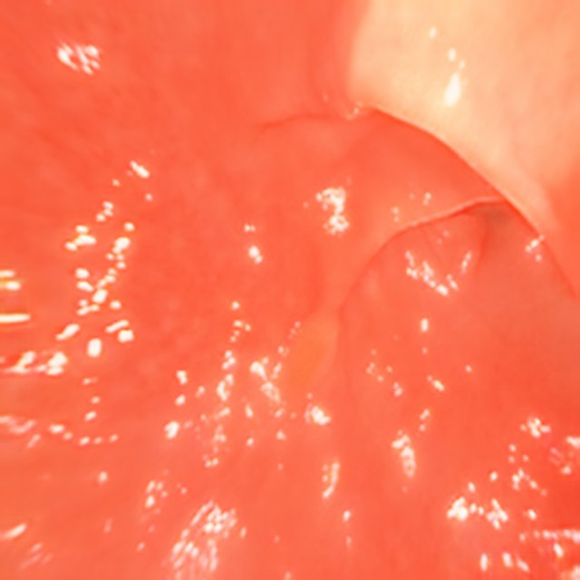
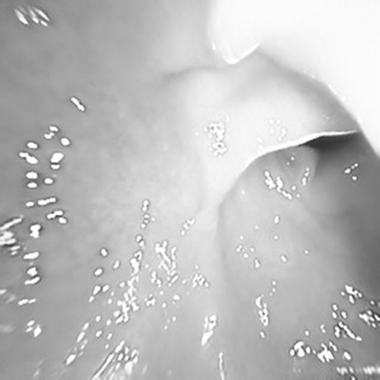
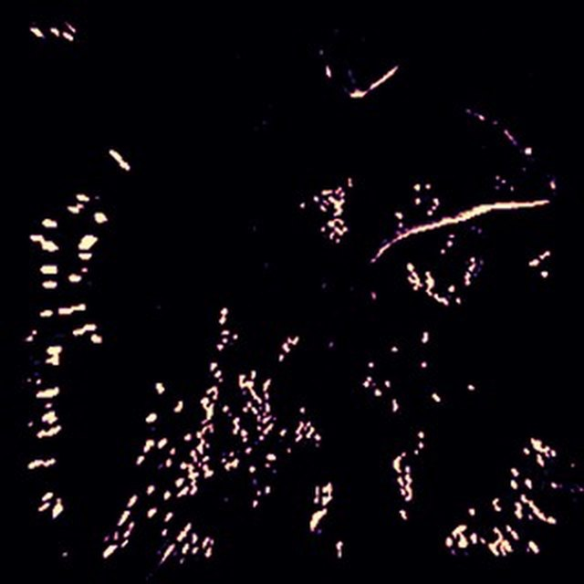
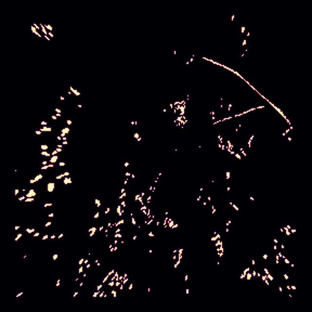
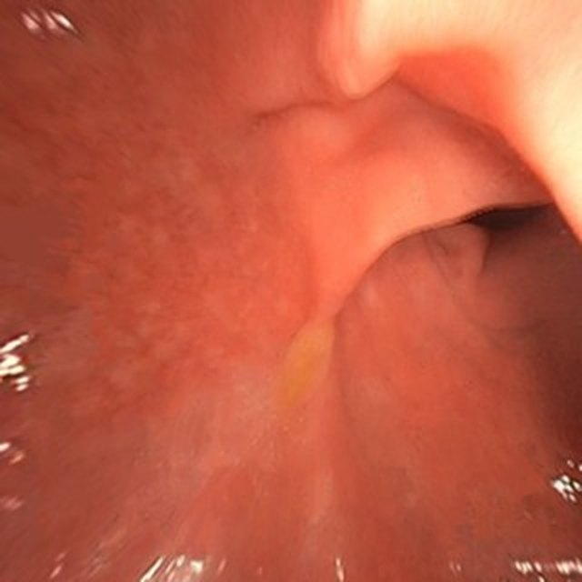
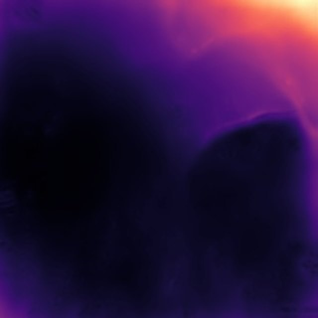
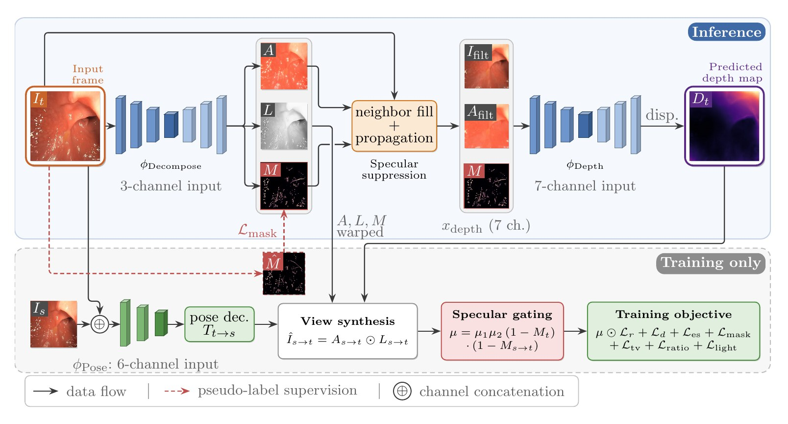
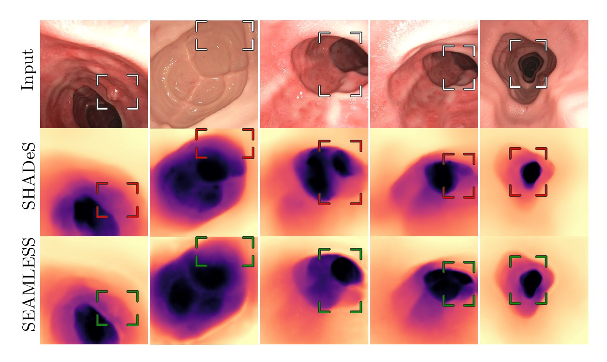
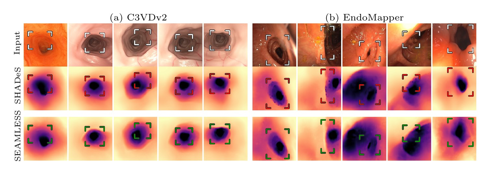

SEAMLESS: Specularity-Aware End-to-End Adaptive Masking and Luminance Estimation via Self-Supervision
A fully self-supervised, end-to-end illumination decomposition that learns to detect and separate specular reflections, for robust monocular depth and pose estimation in gastrointestinal endoscopy.
UCL Medical Physics & Biomedical Engineering · UCL Hawkes Institute & Department of Computer Science
In gastrointestinal endoscopy, 3D information about camera motion and the GI tract surface provides navigation cues to verify inspection completeness and revisit previous locations. Accurate 3D understanding is hard here because a moving light source and specular reflections create irregular illumination. SEAMLESS, like previous approaches in this domain, decomposes scene illumination from tissue albedo while estimating camera motion and depth. It improves on the previous state of the art (SHADeS) with a fully self-supervised, end-to-end illumination decomposition that decouples luminance, specularities, and albedo, removing the reliance on handcrafted specularity detectors. To our knowledge, it is the first monocular depth model in this domain that explicitly learns to detect and separate specular reflections through light decomposition. SEAMLESS outperforms SHADeS and older baselines on every depth metric on C3VD, widens the margin on the more realistic C3VDv2, and produces visibly cleaner depth on real EndoMapper colonoscopies.
The problem
Estimating the camera trajectory and reconstructing the GI tract can support assisted navigation, helping clinicians verify inspection completeness and relocalize previously detected landmarks. Most monocular 3D methods, however, assume well-lit scenes and Lambertian reflectance. Endoscopy breaks both assumptions:
- A moving, directional light source attached to the camera.
- Abundant view-dependent specular highlights from wet tissue.
- Self-supervised photometric losses that read these highlights as geometry.
SHADeS partly addresses this by decomposing each frame into specular reflections, diffuse albedo, and luminance, and training depth and pose on the albedo. Its specular handling, though, lives outside the network: a non-learned intensity detector and a pretrained inpainting model produce the specular-free image before training, so detection errors stay fixed for the whole run and the network never builds its own representation of specularity. SEAMLESS moves specular processing into the network and learns it jointly with albedo, luminance, depth, and pose.







Method

1. Decomposition with a learned specular mask
Following SHADeS, the image is modeled as a diffuse term plus a specular term. Rather than estimating the specular term directly, \(\phi_\text{Decompose}\) predicts a three-channel albedo \(A\), a single-channel shading \(L\), and a soft mask \(M\in[0,1]^{H\times W}\): the per-pixel probability that a pixel is specular.
The mask head is sigmoid-activated with its bias initialized to \(-2.0\), so \(M\) starts near \(\sigma(-2)\approx 0.12\), a mostly non-specular prior. Residual highlights in the albedo are replaced by \(\bar{A}\), the \(7\times7\) average over non-specular neighbors, and all reconstructions use the diffuse term only.
2. Annotation-free specular pseudo-labels
No pixel-level specular labels exist, so \(M\) is anchored by a pseudo-label \(\hat{M}\) computed from the raw frame at every iteration. Highlights appear as sharp brightness peaks over smooth diffuse illumination, so the positive residual of brightness over a \(9\times9\) average is thresholded at its per-image 97th percentile inside the field of view \(\Omega\):
\(\Omega\) excludes the high-contrast vignette boundary, and pixels fully enclosed by the core are flood-filled so large saturated highlights are covered without spreading beyond them. Crucially, \(\hat{M}\) only enters through a weighted BCE term. \(M\) is also shaped by the photometric and decomposition losses, so it can diverge from the pseudo-label whenever those objectives disagree.
3. Specular-suppressed depth input
Highlights are unrelated to geometry yet locally dominant, so a depth encoder fed the raw image can learn spurious brightness-to-depth shortcuts. SEAMLESS fills specular pixels in both the image and the albedo from valid non-specular neighbors, rescaling the albedo fill to the local image luma with \(\gamma\):
Large highlights without valid neighbors are filled by iterative propagation. The depth encoder then receives a seven-channel input: a specular-suppressed image, a view-independent surface color, and an explicit map of which pixels are unreliable.
4. Specular-aware view synthesis
Each source frame's albedo, shading, and mask are warped into the target view, and the reconstruction is their diffuse product \(\hat{I}_{s\to t} = A_{s\to t}\odot L_{s\to t}\). Instead of inpainting the target, highlights are excluded from the loss: a pixel only supervises depth if it is non-specular in both views, so a moving highlight vanishes from each.
5. Training objective
Every term is evaluated at the finest scale. The decomposition loss uses only \(\ell_1\) against the raw image, since SSIM can be satisfied by splitting texture arbitrarily between albedo and shading. Where the photometric signal is gated out, depth smoothness is raised in proportion to the mask, \(1 + \beta\,\text{sg}(M_t)\) with \(\beta = 0.3\).
Trained only on real colonoscopy video (Hyper-Kvasir split of SHADeS: 16,976 training frames) for 20 epochs with Adam, lr \(5\times10^{-5}\) decayed ×0.1 at epoch 10, batch 8, inputs 288×288, frame offsets \(\{0,-1,+1\}\). C3VD, C3VDv2 and EndoMapper are never used for training, so all results are zero-shot.
Results
Predictions are median-scaled to the ground truth. Errors on C3VD and C3VDv2 are in millimeters; EndoMapper is evaluated against sparse COLMAP reconstructions of real colonoscopies (14,213 frames from 119 sequences) in COLMAP units.
SEAMLESS is best on every metric on C3VD, cutting AbsRel by 16% and MAE from 4.4 mm to 3.7 mm. On C3VDv2, which adds fecal debris, mucous pools, blood, and fast camera motion, the margin widens: from C3VD to C3VDv2, SHADeS's AbsRel grows about twice as much as SEAMLESS's.
On EndoMapper, SEAMLESS leads on every metric but by small margins, which the sparse, texture-biased COLMAP reference cannot resolve. The qualitative difference is much larger: SHADeS mispredicts geometry and produces false dark patches in a subset of frames, while SEAMLESS stays stable and plausible.
| Method | MAE↓ | RMSE↓ | AbsRel↓ | SqRel↓ | δ1↑ | δ2↑ | δ3↑ |
|---|---|---|---|---|---|---|---|
| Monodepth2 | 4.6 | 6.3 | 0.1384 | 1.0198 | 0.8114 | 0.9839 | 0.9987 |
| MonoViT | 5.0 | 7.4 | 0.1391 | 1.2823 | 0.8230 | 0.9839 | 0.9991 |
| IID | 4.6 | 6.8 | 0.1476 | 1.2793 | 0.8053 | 0.9613 | 0.9926 |
| SHADeS | 4.4 | 6.3 | 0.1312 | 0.9599 | 0.8397 | 0.9858 | 0.9985 |
| SEAMLESS | 3.7 | 5.2 | 0.1104 | 0.6615 | 0.8753 | 0.9900 | 0.9993 |
TABLE 1 · Depth estimation on C3VD (mm). Baselines as reported in SHADeS.
| Dataset | Method | MAE↓ | RMSE↓ | AbsRel↓ | SqRel↓ | δ1↑ | δ2↑ | δ3↑ |
|---|---|---|---|---|---|---|---|---|
| C3VDv2 | SHADeS | 5.2 | 7.1 | 0.1423 | 1.2120 | 0.7897 | 0.9753 | 0.9985 |
| C3VDv2 | SEAMLESS | 4.3 | 5.7 | 0.1156 | 0.7695 | 0.8439 | 0.9887 | 0.9996 |
| EndoMapper | SHADeS | 7.9 | 12.0 | 0.3803 | 15.2570 | 0.6044 | 0.8268 | 0.9099 |
| EndoMapper | SEAMLESS | 7.7 | 11.7 | 0.3763 | 14.7141 | 0.6058 | 0.8279 | 0.9123 |
TABLE 2 · C3VDv2 (mm) and real EndoMapper colonoscopies (COLMAP units). Neither has published baseline results, so the original SHADeS checkpoint is evaluated under the same protocol.


Key contributions
- A self-supervised light decoupling model, trained end to end on real endoscopy video, that decomposes images into albedo, luminance, and a learnable soft specular mask.
- Integration of that decomposition into a self-supervised depth and pose pipeline that suppresses highlights before depth encoding and gates them out of the photometric loss.
- The first benchmark of prior state of the art on C3VDv2, with SEAMLESS outperforming baselines across C3VD, C3VDv2, and EndoMapper.
Limitations
- Real-data evaluation relies on sparse COLMAP pseudo ground truth of unknown accuracy, so EndoMapper conclusions rest mainly on qualitative evidence.
- Several design changes beyond the mask (ℓ1-only decomposition loss, no albedo consistency term, initialization, pose output scale) are not yet ablated in isolation.
- The mask over-detects along fold boundaries where depth changes sharply, leaving those pixels to the smoothness prior.
- SHADeS still leads in relative pose on EndoMapper, though SEAMLESS leads on every pose metric on C3VD and C3VDv2.